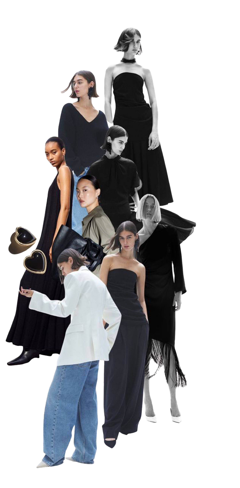
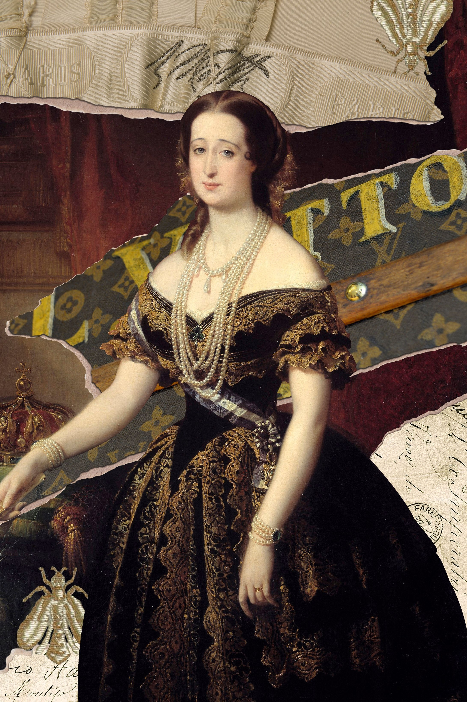
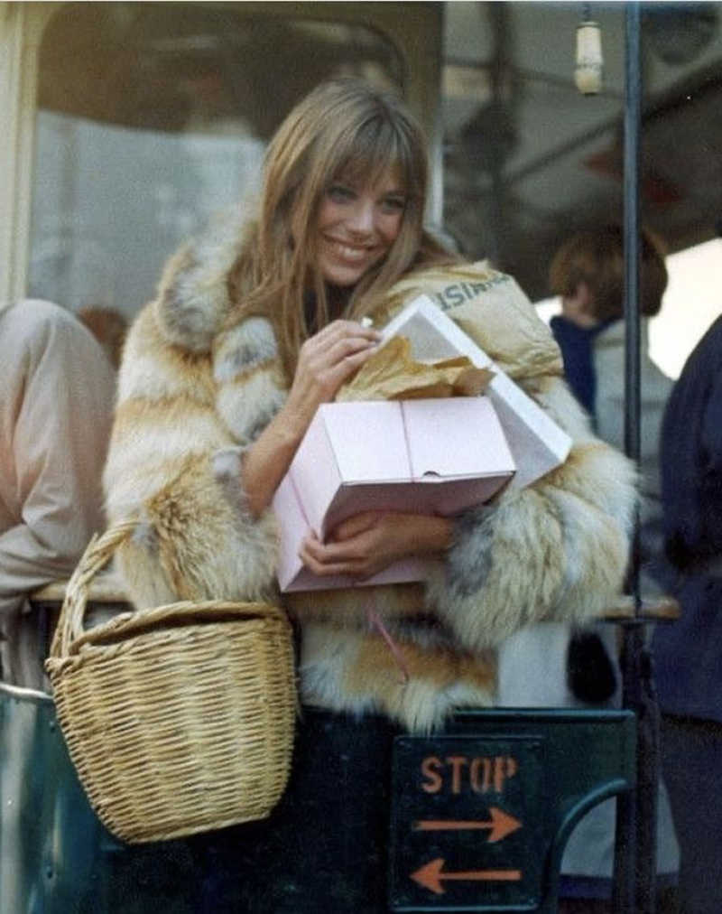
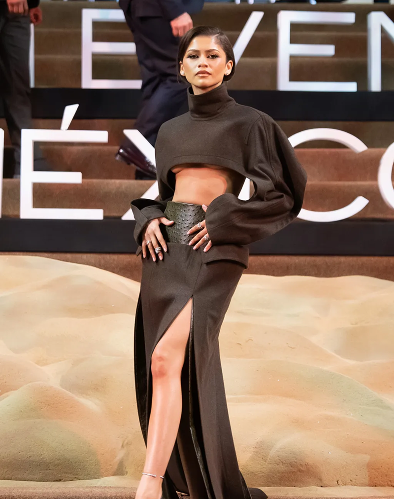
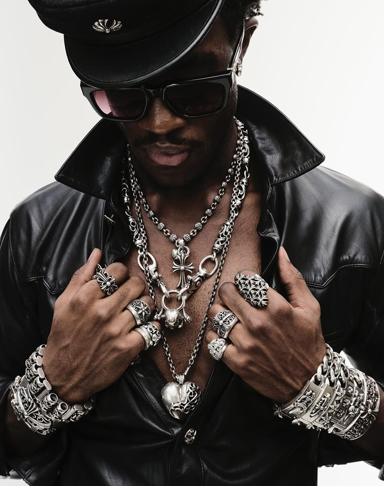

Evolución de la influencia en moda
A lo largo del tiempo, la influencia ha adoptado distintas formas, ha cambiado de actores y de plataformas, pero ha mantenido su función: definir qué es deseable. Entender su evolución permite identificar cómo se genera valor en cada momento y con qué herramientas opera hoy el marketing de influencias en el ámbito de la moda. Haz scroll para conocer más.

Prestigio:
Influencia como legitimación
Figuras de alto estatus (aristocracia, élites económicas) definen lo que tiene valor. Los objetos se vuelven deseables al ser utilizados por estos referentes, que actúan como sello de aprobación social.

Magnetismo:
El «it» y el nacimiento
del deseo
La influencia deja de depender solo del estatus y se desplaza hacia la presencia. Surge el «it»: una forma de magnetismo que concentra atención y aspiración, convirtiendo a ciertas figuras en referentes culturales. El deseo ya no solo se hereda… también se produce.

Medios de masas:
Producción y repetición
de iconos
Cine, moda y publicidad configuran un sistema coordinado de visibilidad. Las imágenes se repiten en distintos medios hasta fijar referentes claros de estilo.

Yo digital:
Democratización
de la influencia
La creación y difusión de contenido se abre a cualquier persona. Blogs y redes sociales permiten construir visibilidad sin intermediarios, generando nuevas formas de prescripción basadas en cercanía y experiencia. La influencia se desplaza de la representación a la autoexpresión.

Algoritmo:
Influencia basada
en rendimiento
La visibilidad deja de depender principalmente de quién publica y pasa a depender de cómo funciona el contenido. Plataformas como TikTok reorganizan la influencia en torno a la atención y la interacción. El valor se mide en rendimiento: captar, sostener y convertir la atención.
